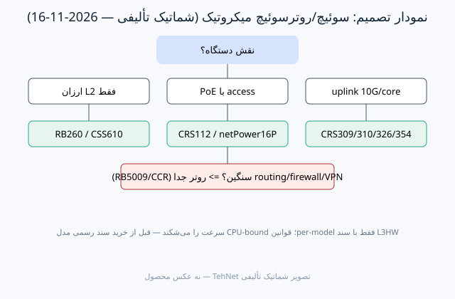
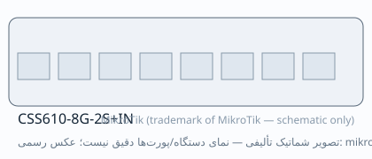
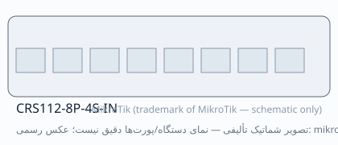
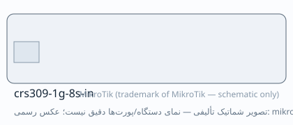
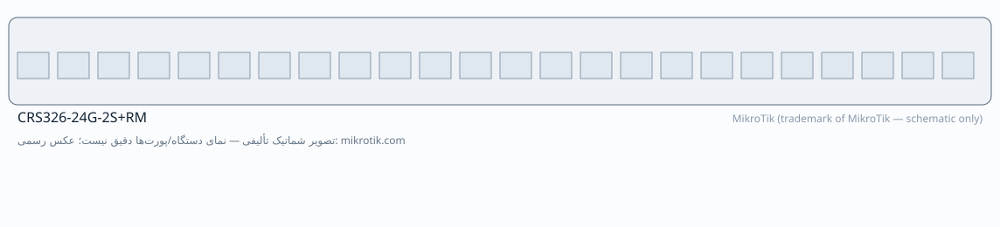

پاسخ کوتاه: CSS = سوئیچ سادهٔ لایه۲ با SwOS (ارزانتر)؛ CRS = روترسوئیچ با RouterOS (مدیریتیتر، با L3 hardware offload فقط در مدلهایی که سند رسمی اجازه داده)؛ روتر (RB/CCR) برای مسیریابی/فایروال/VPN طراحی شده و CRS بهجای آن انتخاب خوبی نیست چون CPU کوچک آن برای فایروال/VPN ساخته نشده است. برای access لایه۲ ارزان CSS610/RB260؛ برای access با PoE دفتری CRS112/netPower؛ برای uplink 10G و core، CRS309/310/326/354. جدول کامل و شرایط هر مدل ادامه مطلب.
بازبینی منابع: 2026-11-16. قیمتهای تومانی فقط بهعنوان مشاهدهٔ فروشگاهی با تاریخ ثبت شدهاند، نه قیمت پیشنهادی.

3. CSS در برابر CRS؛ دقیقتر از برچسب
4. routing نرمافزاری و L3 hardware offload
5. PoE؛ استانداردها را مخلوط نکنید
8. منابع
روتر، سوئیچ و روترسوئیچ چه تفاوتی دارند؟ روتر در لایه۳ بین شبکهها بر اساس IP مسیر میدهد (میکروتیک: RouterOS با فایروال/VPN کامل). سوئیچ لایه۲ فریمها را بر اساس MAC بین پورتهای یک شبکهٔ محلی میبرد (میکروتیک: SwOS با امکانات محدود). روترسوئیچ MikroTik دستگاهی با پورتهای سوئیچی زیاد و RouterOS است که هر دو نقش را میپذیرد — اما به اندازهٔ هر نقش، نه بیشتر.
routing نرمافزاری با L3 hardware offload چه فرقی دارد؟ در routing نرمافزاری CPU هر بستهٔ بینشبکهای را پردازش میکند (قوانین فایروال کامل اعمال میشوند). در L3HW چیپ سوئیچ مسیر را سختافزاری میکند (سرعت بالا) اما فقط ویژگیهایی که سند سازنده اجازه داده از hardware عبور میکنند؛ قوانین خاص میتوانند بسته را به CPU برگردانند و سرعت را پایین بیاورند. فهرست دقیق per-model در راهنمای فعلی MikroTik است.
چرا یک CRS جای روتر فایروال/VPN را نمیگیرد؟ CPU CRSها کوچک است (مثلاً CRS309: دو-هستهٔ 800MHz) و برای قوانین فایروال، NAT و VPN طراحی نشده است. ترکیب درست در اکثر شبکههای شرکتی: روتر (RB5009/RB4011/CCR) در لبه + CRS برای سوئیچینگ.
| مدل/SKU | پورت مسی | فیبر | PoE-out | OS | چیپ/نکته | مناسب برای |
|---|---|---|---|---|---|---|
| --- | --- | --- | --- | --- | --- | --- |
| RB260GS | 5x Gb | 1x SFP | خیر | SwOS | پایه | دفتر ۵ نفرهٔ ساده |
| RB260GSP | 5x Gb | 1x SFP | دارد (سطوح UNKNOWN) | SwOS | پایه | CCTV کوچک |
| CSS610-8G-2S+IN | 8x Gb | 2x SFP+ 10G | خیر | SwOS Lite | 88E6193X | access ارزان با uplink 10G |
| CSS610-1G-4P-1S+IN | 4x Gb | 1x SFP+ | af/at | SwOS Lite | UNKNOWN | دوربین/AP کوچک |
| CRS112-8P-4S-IN | 8x Gb PoE | 4x SFP 1G | af/at+پسیو | RouterOS L5 | QCA8511 400MHz | access PoE با uplink فیبر |
| CRS309-1G-8S+IN | 1x Gb | 8x SFP+ 10G | خیر | RouterOS/SwOS | 98DX8208؛ تا 80Gbps | سرور/NAS 10G |
| CRS310-8G+2S+IN | 8x 2.5G | 2x SFP+ (1/2.5/10G) | خیر | RouterOS v7/SwOS | 98DX226S | upgrade 2.5G/10G دفتر کوچک |
| CRS310-1G-5S-4S+IN | 1x Gb | 5x SFP+4x SFP+10G | خیر | RouterOS/SwOS | خانوادهٔ 98DX | تجمیع فایبر |
| CRS317-1G-16S+RM | 1x Gb | 16x SFP+ | خیر | RouterOS/SwOS | 98DX8216 | دیتاسنتر کوچک |
| CRS318-16P-2S+ (netPower 16P) | 16x Gb PoE | 2x SFP+ | af/at | RouterOS | 800MHz/256MB | access دوربین/AP |
| CRS326-24G-2S+RM | 24x Gb | 2x SFP+ | خیر | RouterOS/SwOS | ~68Gbps | access/distribution |
| CRS326-24S+2Q+RM | — | 24x SFP++2x QSFP+ 40G | خیر | RouterOS/SwOS | core | core/distribution |
| CRS328-4C-20S-4S+RM | 4x Combo | 20x SFP+4x SFP+ | خیر | RouterOS/SwOS | UNKNOWN | تجمیع فایبر |
| CRS354-48G-4S+2Q+RM | 48x Gb | 4x SFP++2x QSFP+ | خیر | RouterOS/SwOS | UNKNOWN | access متراکم |




منبع: صفحات رسمی MikroTik و مشاهدات فروشگاهی با تاریخ (جزئیات و UNKNOWNها در switch-catalog.csv)؛ بازبینی 2026-11-16.
برچسبها معیار فنی نیستند — چیپ و OS معیارند: CSS610 با SwOS Lite کار میکند (مدیریت وب محدود؛ بدون SSH/کنسول؛ RouterOS ندارد) و چیپ Marvell دارد؛ CRS با RouterOS کامل (و در بسیاری مدلها dual-boot با SwOS). کدام قابلیت موجود است به چیپ، مدل و نسخهٔ OS وابسته است — مثلاً چیپ CSS610-8G-2S+IN بر اساس صفحهٔ سازنده 88E6193X است و چیپ CRS310-8G+2S+IN بر اساس همان صفحه 98DX226S است — دو چیپ با تواناییهای متفاوت. «همهٔ CRSها dual-boot و L3HW دارند» فرض غلطی رایج در مقایسههای فارسی است.
L3HW مسیر بین VLANها را به چیپ میسپارد؛ سرعت خط بالا میماند اما محدودیتهای سند رسمی برقرار است (تعداد route، قواعد خاص، برخی قابلیتها CPU-bound). اگر بین VLANها فایروال دقیق لازم دارید، ترافیک به CPU برمیگردد و همان محدودیت CPU CRS بر شما اعمال میشود. در آن حالت روتر مستقل (RB5009/CCR) در کنار CRS درستتر است. تفاوت این دو حالت را قبل از خرید با سند فعلی MikroTik تطبیق دهید؛ اسناد قدیمی frozen ممکن است با نسخهٔ جاری help.mikrotik.com متفاوت باشند.
سه خانواده را جدا کنید: **پسیو MikroTik** (ولتاژ خاص؛ فقط دستگاههای MikroTik سازگار)، **802.3af** (تا ~15.4W) و **802.3at** (تا ~30W). بودجهٔ کل PoE-out را از جمع مصرف دستگاهها حساب کنید نه تعداد پورت؛ مثال سندشده: netPower 16P با max ~316W در برابر آداپتورهای 48V~96W پیوست — برای بار کامل باید PSU بزرگتر بخرید. سازگاری ماژول نوری را از شکل قفسه (SFP/SFP+) نتیجه نگیرید؛ استاندارد ماژول مهم است.
1. **دفتر با تلفن و دوربین PoE (۱۰–۲۰ دستگاه):** CRS112-8P-4S-IN یا netPower 16P؛ بودجهٔ PoE را جمع بزنید.
2. **access layer متراکم (۴۸ پورت):** CRS354-48G-4S+2Q+RM با uplink به core.
3. **uplink فیبر 10G برای دفتر:** CRS310-8G+2S+IN در access؛ CRS326-24S+2Q+RM در distribution.
4. **شبکهٔ 10G سرور/NAS:** CRS309-1G-8S+IN یا CRS310-8G+2S+IN (پورتهای 2.5G برای endpointهای مدرن)؛ routing بین VLANها را به روتر بسپارید.
5. **تجمیع شعب روی فایبر:** CRS328-4C-20S-4S+RM یا CRS326-24S+2Q+RM.
6. **محیطی که روتر جدا لازم دارد:** هر CRS بالا + RB5009/CCR2116؛ CRS قرار نیست VPN/فایروال بدهد.
7. SKU دقیق و revision را بنویسید؛ چیپ/OS هر SKU را با صفحهٔ رسمی همان مدل تطبیق دهید (مثال: CRS112-8P-4S-IN با چیپ QCA8511).
2. OS را از سند مدل تأیید کنید: SwOS فقط، SwOS Lite فقط، یا RouterOS (+dual-boot)؟
3. اگر routing بین VLAN لازم دارید، L3HW آن مدل را در سند رسمی ببینید — برچسب CRS کافی نیست.
4. PoE: استاندارد (af/at/پسیو)، بودجهٔ کل وath consumption هر دستگاه را جمع بزنید؛ PSU پیوست را با max مصرف مقایسه کنید.
5. ماژول نوری: استاندارد و تک/دو-موج بودن SFP/SFP+ را با سند چک کنید؛ شکل قفسه ملاک نیست.
6. صدای فن و محل نصب (rack/desktop/outdoor) را از مشخصات ببینید.
7. برای routing واقعی بین VLANها با فایروال دقیق، بودجهٔ روتر جدا (RB5009/CCR) را در نظر بگیرید.
SwOS و RouterOS روی یک دستگاه؟ در بسیاری از CRSها dual-boot ممکن است؛ روی CSS610 فقط SwOS Lite است — قبل از خرید از سند مدل بپرسید.
CRS326-24G-2S+RM برای core کافی است؟ برای distribution/access بله؛ برای core با ترافیک 40G، CRS326-24S+2Q+RM منطقیتر است.
PoE پسیو برای دوربین IP معمولی؟ معمولاً نه؛ دوربینهای استاندارد af/at میخواهند — استاندارد دوربین را چک کنید.
آیا CRS بهجای روتر مودم هم میآید؟ خیر؛ PPPoE/NAT/fایروال کار CPU روتر است.
برای لبهٔ routing/VPN، مقایسهٔ روترهای میکروتیک از hEX تا CCR را ببینید.